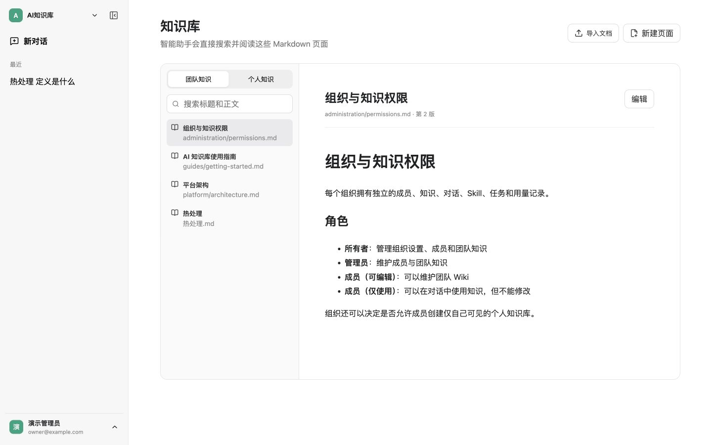
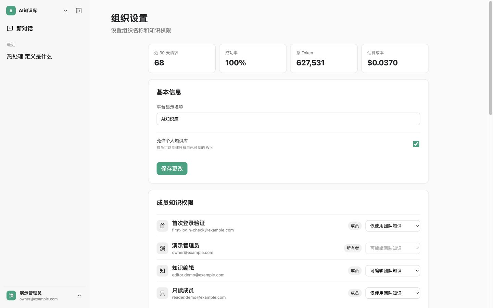
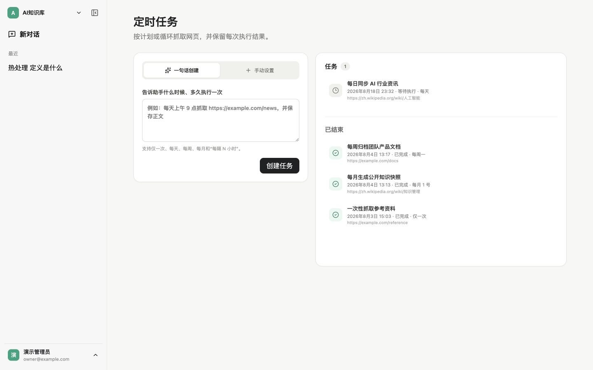

可读的 Wiki，不是黑盒切片
团队和个人知识都以完整 Markdown 页面保存。用户可以阅读、编辑、搜索、追踪版本，也能看见回答引用了哪一页。
搜索知识库已检查 3 个可访问页面，找到 1 个相关页面

多租户组织、Markdown Wiki、DeepSeek 与 Codex app-server，配合 Skill、周期任务和 Crawl4AI，统一收进一个克制、清晰的工作界面。

真实产品界面 · 非概念图
保留 ChatGPT 般克制的交互，同时提供企业真正需要的组织边界、引用证据和执行记录。
团队和个人知识都以完整 Markdown 页面保存。用户可以阅读、编辑、搜索、追踪版本，也能看见回答引用了哪一页。
组织隔离、成员角色、团队知识编辑权和个人 Wiki 策略，都由服务端统一执行。
一句话创建单次或周期任务，由 Crawl4AI 抓取网页并保留每一次 Markdown 结果。
基于 Codex app-server 的持续会话，按组织装载 Skill，并为高风险工具保留审批边界。
按组织、用户和请求记录模型用量、成本、错误与关键行为，同时默认保护密钥和完整提示词。
以下界面来自同一套本地演示环境。演示内容经过整理，用来清楚呈现 Wiki、多租户权限和周期任务的实际交互。
团队与个人知识使用完整 Markdown 保存。用户能搜索、阅读、编辑、追踪版本，也能从对话引用直接回到原页面。

一个账号可以切换不同组织；组织知识、对话、任务和用量互不混用。团队成员还可以分别设置编辑或仅使用权限。

用户可以自然语言或手动创建任务，设置单次、每天、每周、每月与固定间隔，由 Crawl4AI 保存 Markdown 结果。

适用于 Codex、Claude Code、Cursor 等具备终端和文件权限的智能编程助手。它会拉取项目、启动服务，并用真实页面验证结果。
请在我的本地电脑上完整部署 Codex Wiki Platform：从 https://github.com/YixiaoOneSmile/codex-wiki-platform 克隆最新 main 分支，先检查并说明 Docker/Compose、Node.js 22+ 和官方 Codex CLI 是否可用，阅读 README、.env.example 与部署文档后创建仅保存在本机且不会提交的 .env；如果缺少 DeepSeek API Key 或其他必须由我提供的配置，请集中向我询问并等待，不得虚构、输出或提交任何密钥；配置完成后使用 docker compose -f docker-compose.yml -f docker-compose.dev.yml up --build -d 启动服务，按项目文档完成数据库初始化并执行 docker compose exec api node packages/database/dist/seed.js，确认各容器健康，运行项目检查与测试，最后实际访问 http://localhost:8080 验证登录、对话、Wiki、多租户权限和定时任务页面可用；遇到安全且可逆的本地问题请自行诊断、修复并重试，禁止删除现有数据、降低测试标准或跳过必要验证，完成后向我报告访问地址、演示账号、已通过的检查以及仍需我处理的事项。缺少密钥时，助手会停下来询问；真实密钥只保存在本机，不应出现在聊天、截图或 Git 提交中。